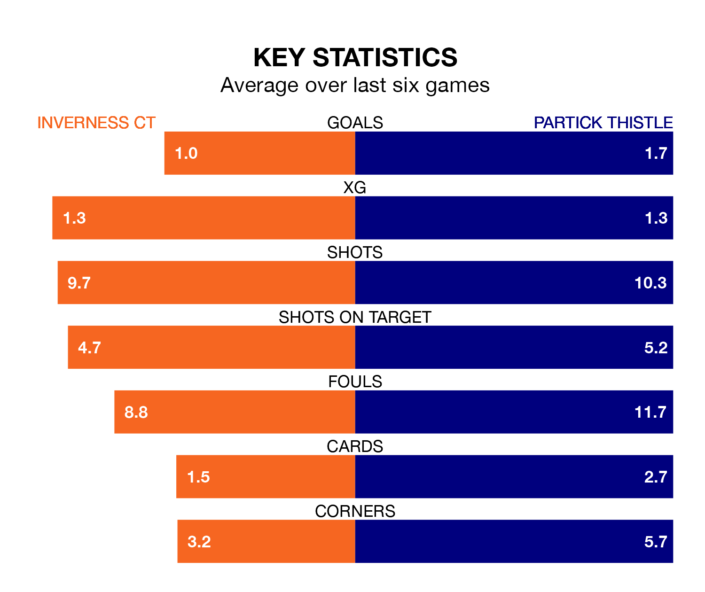

Mid-season relegation candidates Inverness CT face a challenge against high-flying Partick Thistle at the Tulloch Caledonian Stadium on Saturday.
Inverness CT are seventh in the Championship table, and have picked up six wins and six draws in their 23 games to date.
Thistle, meanwhile, are third in the standings with 37 points, having won 10 and drawn seven of their first 22 matches, and are 11 points behind table-toppers Dundee United.
With 43 goals in 22 games so far this season, Partick Thistle are the league's second-highest scorers with 2.0 goals per game. But they are conceding more than average too, letting in 34 goals at a rate of 1.5 per game.
Inverness CT, meanwhile, are below average scorers, with 1.1 goals per game, compared to a league average of 1.4. They have conceded 1.2 goals per game.
In the last 10 years, Inverness CT and Partick Thistle have played each other on 29 occasions. Inverness CT won 10 of them, Partick Thistle 11, and they drew eight times.
On average, ICT scored 1.1 goals and Thistle 1.4 in those matches.
Their last meeting was on December 23, when they played out a 1-1 draw.
In Brian Graham, Thistle have one of the league's sharpest shooters so far this season. He has notched 10 goals in 20 appearances, to sit third in the scoring charts.
His goal rate of one every 160 minutes is quicker than that of Billy McKay, ICT's top scorer with a goal every 292 minutes, and a total of six goals in 23 games.
The hosts are in mixed form in the Championship, with two wins and a draw from their last six games.
With two wins and three draws over that period, the away team's form is slightly better – they have taken nine points from 18, compared to Inverness CT's seven.
Inverness CT's last match was on February 3, a 1-0 loss against Queen's Park.
Partick Thistle drew 1-1 with Airdrieonians last time out, on January 27, with Tomi Adeloye on the scoresheet.
Updated: 10:01 (UTC), 06/02/24